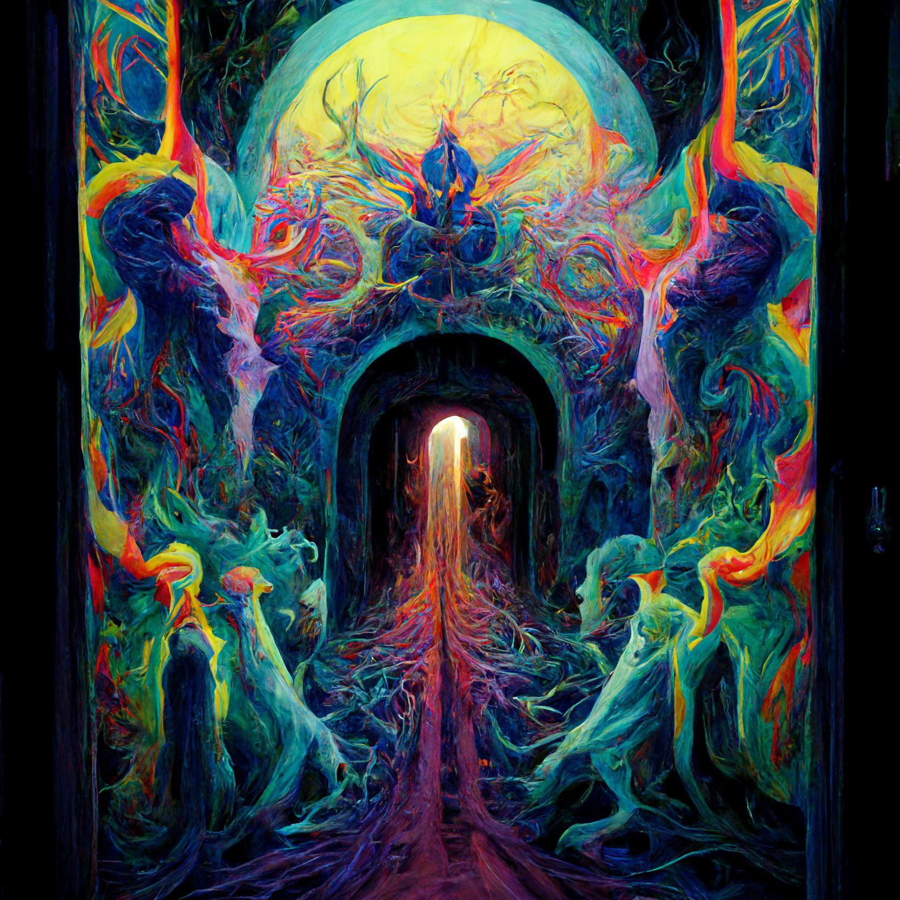

Portal Mental ou Gafe da Moda? Cientistas Divididos Sobre Óculos de Sol "Terceiro Olho"
Pisque duas vezes se eles já estiverem controlando você... Eles são a última moda que varre a cena da
moda underground e os laboratórios de ciência de ponta - óculos de sol com uma lente hipnótica e
rodopiante bem no centro. Os defensores afirmam que esses óculos destravam seus poderes psíquicos
latentes, permitindo que você perfure o véu da realidade.
Detratores? Bem, eles estão murmurando sobre conspirações de controle mental e falhas cerebrais
irreversíveis. Uma coisa é certa: seja uma porta para uma consciência superior ou um desastre da
moda, os óculos de sol "Terceiro Olho" garantem que você seja o centro das atenções – e talvez o
alvo de algo invisível...
Linha Direta de Viajantes do Tempo Inundada com Reclamações sobre 2024
Esqueça dicas erradas sobre ações e números de loteria perdidos. Aparentemente, pessoas do futuro
estão inundando uma linha direta dedicada com queixas sobre aspectos surpreendentemente mundanos de
2024 – desde gafes da moda até tendências alimentares controversas que foram longe demais.
É uma história que quase desafia a crença, mas a evidência parece inegável. Um misterioso fórum
online, alegando hospedar um portal de comunicação com nossos descendentes, se tornou viral nos
últimos dias. Enquanto muitos o descartam como uma brincadeira elaborada, o grande volume e a
especificidade das reclamações estão semeando as sementes da dúvida...
Será que uma Meia Desaparecida Criou um Buraco Negro? Ou Apenas um Quarto Realmente Bagunçado?
Vamos ser sinceros, meias desaparecidas são as brincalhonas cósmicas do mundo da lavanderia. Elas são
como os ninjas do cesto, desaparecendo sem deixar vestígios. Existe uma conspiração? Uma sociedade
secreta de ladrões de meias? Ou somos simplesmente hilariamente ruins em manter o controle de nossos
calçados? Prepare-se para rir muito (bem, pelo menos das meias que você encontrar) enquanto
desvendamos esse mistério espetacular!
O universo está repleto de mistérios – buracos negros, matéria escura e a eterna questão de para onde
diabos desapareceu a outra meia. É este um caso de intervenção cósmica ou apenas o resultado de um
quarto desarrumado? O fenômeno da meia desaparecida tem confundido cientistas e usuários de meias,
levando a teorias que vão desde gnomos de meia travessos a mini-portais escondidos na secadora...
Em Destaque
Artista Local Afirma que Suas Pinturas São Janelas para Universos Paralelos

A galeria vibra com uma mistura de curiosidade e nervosismo. A última exposição de Haiku, "Visões do
Multiverso", é tão controversa quanto visualmente impressionante. Sua afirmação de que as pinturas são
portais para realidades alternativas faz com que os espectadores sussurrem uma mistura de admiração e
ceticismo. Em meio à multidão, eu encurralo a enigmática artista para uma entrevista exclusiva.
Entrevista
Entrevistador: Seu trabalho é incrivelmente impressionante, quase perturbador. O que
inspirou sua afirmação de que essas são janelas para universos paralelos?
Artista: Começou como intuição, uma sensação de que minhas pinceladas tocavam em
algo… outro. Visões, vislumbres de paisagens impossíveis, seres diferentes de tudo que eu já
imaginei. Minhas pinturas são uma tentativa de traduzir esses momentos efêmeros para a tela.
Entrevistador: Existe um processo na maneira como você pinta essas peças ou elas
fluem espontaneamente?
Artista: Ambos, de certa forma. Há uma estrutura para estabelecer a base, mas uma
vez que eu abri essa 'porta', ela se torna uma dança selvagem. Formas emergem da própria tinta, as
cores mudam com vontade própria. É assustador e estimulante.
Entrevistador: Você acredita que os espectadores podem sentir esses mundos paralelos
através do trabalho?
Artista: Talvez não conscientemente. Mas acredito que eles despertam algo mais
profundo, um reconhecimento subconsciente de realidades além da nossa. Às vezes vejo pessoas olhando
para uma pintura com uma mistura de admiração e desconforto. Acho que isso é um sinal de que tive
sucesso, pelo menos em parte.